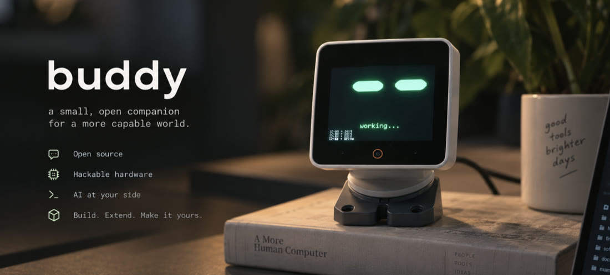
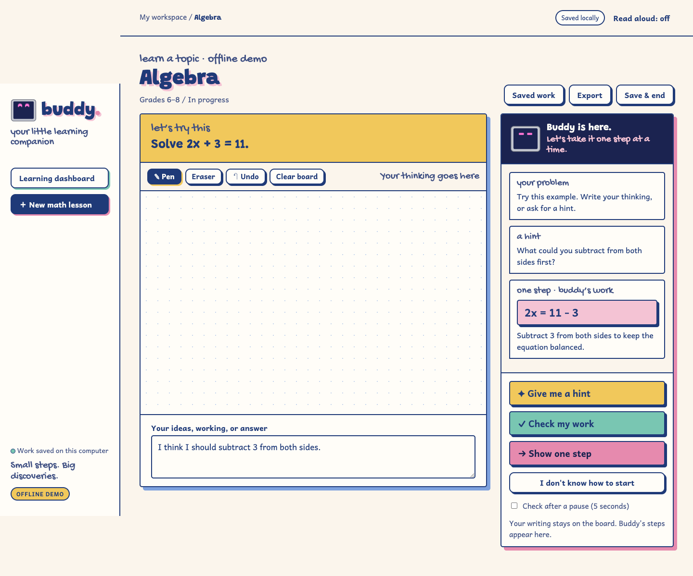

your desktop sidekick
every chapter has its own slide next. the ▶ chip on a slide jumps back to that moment in the film.
A search result can be right. A busy day can still be hard. What helps is knowing what to do next.
Meet the buddy that can do both. ↘
A physical head, a local Mac app, and a memory that stays useful.

“hey buddy, where's my mug?”
Today's facts are checked, not guessed.
not magic — a system with boundaries.
Clicks and types, up to 25 steps.
Weather, scores or prices, in one line.
“Where's my mug?” It turns and looks.
Curious, happy, bored, lonely, startled.
Only new or interesting thoughts.
It sleeps on the day.
At most 2 an hour, 8 a day.
After 10 quiet minutes, or on “go explore.”
Sway, bob, nod, wiggle, figure-8.
Its lights beat pink and it chirps.
Its mood, and a diary app with 7 tabs.
Decisions, to-dos and open questions.
A few lines per chat, never the words.
Naps when idle, looks busy while it works.
Math and code go to a stronger model.
Sending, paying, deleting. Say “stop” anytime.
More like a patient teacher who knows when to be small.
the goal is the next thought.
They want help without losing the feeling of solving it.
A helper that explains the next move, not the whole game.
of UC Berkeley Calculus I students tested ready or nearly ready, 2018–2020
tested ready or nearly ready, 2021–2023
had severe math gaps in 2022–23. The most common score was zero.
“Office hours that should be spent discussing integrals instead become lessons on fractions and basic algebra you would expect students to learn in middle school.”Zvezdelina Stankova, mathematics professor, UC Berkeley
Source: Stankova's op-ed in the San Francisco Standard, Aug 15, 2026, reported by the California Post (Anthony Blair), Aug 16, 2026. Figures are from a diagnostic exam given to Calculus I students.
“Okay buddy, I want
to do a math lesson!”

“What could you do to both sides?”
A nudge. It never performs a step.
“Let's look at line two.”
It explains the first slip only.
“Here's the next line, and why.”
Exactly one transformation, in its own panel. Tap again for the next.
Your board stays yours. buddy adds the smallest useful move.
your desktop sidekick